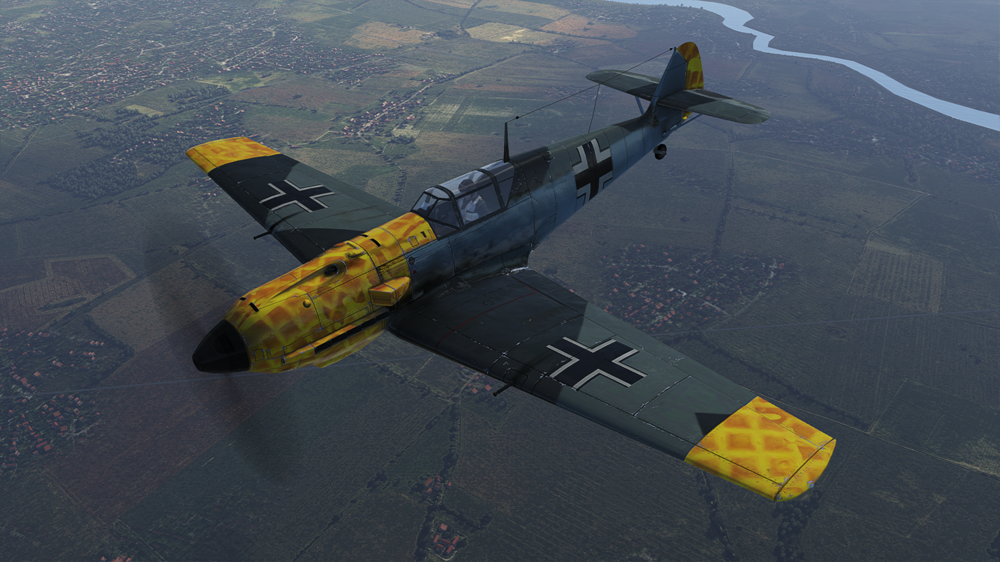
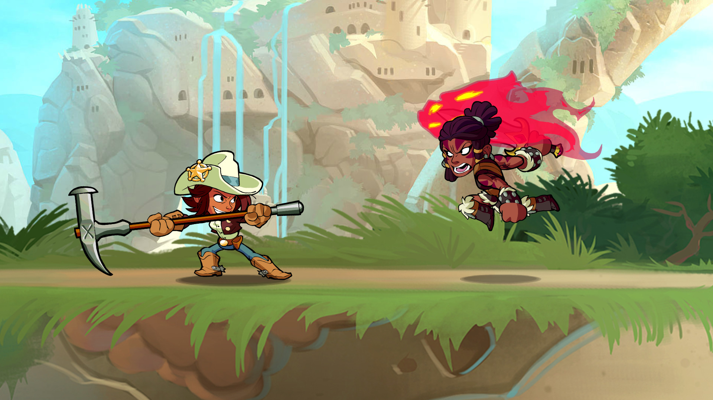

todo inicio con una gran pereza de su querido mateo cara floja, pero el decidio darle un pare a aquella pereza que dia tras dia lo atormentaba
War thunder: uno de esos juegos le tengo muchos logros ya optenidos pero es adictivo.
Se trata de un videojuego de la segunda guerra mundial, de diversos vehiculos de aquel conflicto hasta la actualidad

Brawlhalla:
En este solo me dedico a mejorar en reaccion al momento de atacar al oponente.
Es un videojuego de steam de pelea que es como Super Smash Bros pero con mecanicas mas simples
